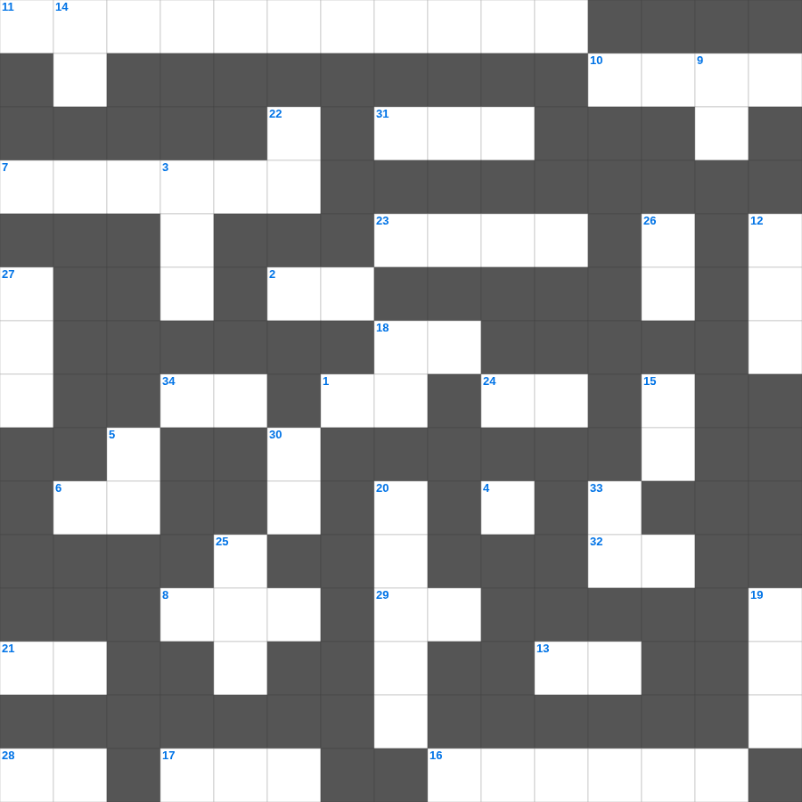

예수님의 고난과 부활
📌 서비스 정의
십자가로세로는 교회 주보와 주일학교에서 사용할 수 있는 성경 기반 가로세로 퍼즐 서비스입니다. 성경 인물, 사건, 핵심 구절을 바탕으로 제작되었습니다. 온라인 풀이 및 인쇄 기능을 제공합니다.
예수님의를 주제로 한 예수님의 낱말 퍼즐입니다. 35개의 단어를 맞춰보세요! 가로세로 낱말 퍼즐 형식으로 예수님의의 핵심 내용을 재미있게 복습할 수 있습니다.

📝 가로 힌트
1. 새 예루살렘 성곽의 첫 번째 기초석
2. 하나님의 뜻을 전달하는 것
4. 제사장들이 머리에 쓴 것
6. 마지막 재앙: 처음 난 것들의 이것
7. 지붕을 뚫고 내려온 병자를 고치신 사건
8. 제사장이 손발을 씻는 놋 그릇
10. 쉬지 말고 이것하라
11. 수가성 여인과 물가에서의 대화
13. 여호와 이것: 평강의 하나님
16. 다윗이 물맷돌로 거인 장수를 이긴 사건
17. 최후의 만찬에서 떡과 포도주를 나누심
18. 성경은 하나님의 이것으로 된 것으로
21. 예수님이 구름을 타고 하늘로 올라가심
23. 성경 전체 권수 (신약+구약)
24. 하나님께 예물을 드리는 시간
28. 예수님이 첫 기적(물로 포도주)을 베푸신 곳
29. 장래에 이루어질 좋은 일을 기다리는 마음
31. 좁은 문으로 들어가기를 이것하라
32. 성령의 9가지 열매 중 첫 번째
34. 의의 이것 신경(호심경)
📝 세로 힌트
3. 평안히 눕고 이것하기도 하리니
5. 보이지 않는 것들의 실상이요 바라는 것들의 증거
9. 엘리야가 회오리바람을 타고 간 곳
12. 대제사장의 흉패에 박힌 열두 보석 중 하나
14. 예수님은 우리의 영원한 이것(길, 진리, 이것)
15. 지성소와 성소를 나누는 두꺼운 천
18. 요셉이 보디발의 아내 유혹을 물리치고 간 곳
19. 노아의 방주에 탄 사람의 총수
20. 계시록의 일곱 교회 중 첫 번째 교회
22. 나는 마음이 이것하고 겸손하니
25. 예수님의 제자 수
26. 누구든지 주의 이름을 부르는 자는 이것을 받으리라
27. 엘리야가 바알 선지자와 대결한 산
30. 민족이 민족을 나라가 나라를 대적하여 이것이 일어남
33. 초대 교회에서 구제를 위해 세운 일곱 이것
📖 함께 읽으면 좋은 성경사전
퍼즐을 풀기 전에 읽으면 힌트가 쉬워지고, 풀고 나서 읽으면 내용을 한 번 더 복습할 수 있습니다.
🧩 이 퍼즐에서 배우는 내용
이 퍼즐은 예수님의 고난과 부활의 핵심 단어와 개념을 자연스럽게 복습할 수 있도록 구성되었습니다. 주일학교 수업이나 개인 성경공부에서 학습 내용을 점검하는 용도로 바로 활용할 수 있습니다.
🧑🏫 교회 교육 자료 활용
이 퍼즐은 주일학교 교재 추천 자료로 활용할 수 있고, 주일학교 주보에 넣기 좋은 분량으로 구성되어 있습니다. 수업용 주일학교 교안에 활동지로 붙이거나, 예배 후 복습용 주일학교 공과교재로 바로 사용할 수 있습니다.
🏷️ 키워드
예수님의 낱말 퍼즐, 예수님의, 십자가로세로, 성경퀴즈, 말씀퀴즈, 가로세로퍼즐, 주일학교 교재 추천, 주일학교 주보, 주일학교 교안, 주일학교 공과교재